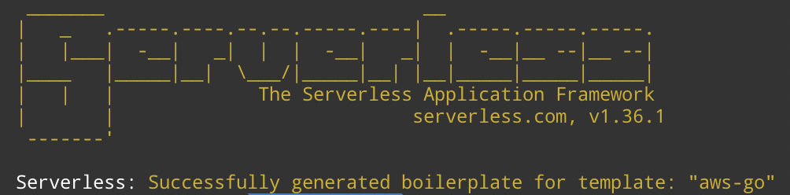

😅 혼자 해 본 아주 얕은 수준의 따라하기
사전 준비
- Node.js (v4 이상)
- Go
Serverless 설치
$ npm install -g serverless
성공적으로 설치되면, 터미널에 serverless 라고 입력했을 때 Commands 부터 시작하는 설명이 출력된다. sls 라고 축약어로 입력해도 동일하게 동작한다.
Hello World Go
아래 내용을 따라하기만 하면 끝 🤓
Create
$ sls create --template aws-go --path myService
이렇게 짠 하고 서비스가 생성된다.
Build
만들어진 서비스에는 아래와 같은 내용의
Makefile이 있고 빌드가 필요하다.1
2
3
4
5
6
7
8
9
10
11.PHONY: build clean deploy
build:
env GOOS=linux go build -ldflags="-s -w" -o bin/hello hello/main.go
env GOOS=linux go build -ldflags="-s -w" -o bin/world world/main.go
clean:
rm -rf ./bin
deploy: clean build
sls deploy --verbose빌드가 되면
bin폴더가 생기고 폴더 아래에서 결과물을 확인할 수 있다.GOOS는 타겟 운영 체제를 의미하므로, 빌드 환경이linux가 아니라면 빌드 결과물인 실행 파일이 실행되지 않음을 유의한다.Deploy
$ sls deployendpoint를 통해 배포된 함수의 URL 정보를 확인할 수 있다. 브라우저를 통해 해당 URL을 입력하면 동작하여 메시지를 출력하는 것을 볼 수 있다.Invoke
$ sls invoke -f hello$ sls invoke -f world-f 옵션은 함수를 의미하며
invoke명령을 통해 함수를 실행하게 된다.실행하면 아래와 같은 결과가 출력되는데 이는 hello/main.go에서 정의된 값이다.
1
2
3
4
5
6
7
8
9{
"statusCode": 200,
"headers": {
"Content-Type": "application/json",
"X-MyCompany-Func-Reply": "hello-handler"
},
"multiValueHeaders": null,
"body": "{\"message\":\"Go Serverless v1.0! Your function executed successfully!\"}"
}Remove
$ sls remove배포한 서비스를 제거한다. 제거하고 나면 함수의 URL에 접속 시 유효하지 않은 결과가 출력된다.
참고
https://serverless.com/framework/docs/providers/aws/guide/installation/
https://serverless.com/framework/docs/providers/aws/examples/hello-world/go/